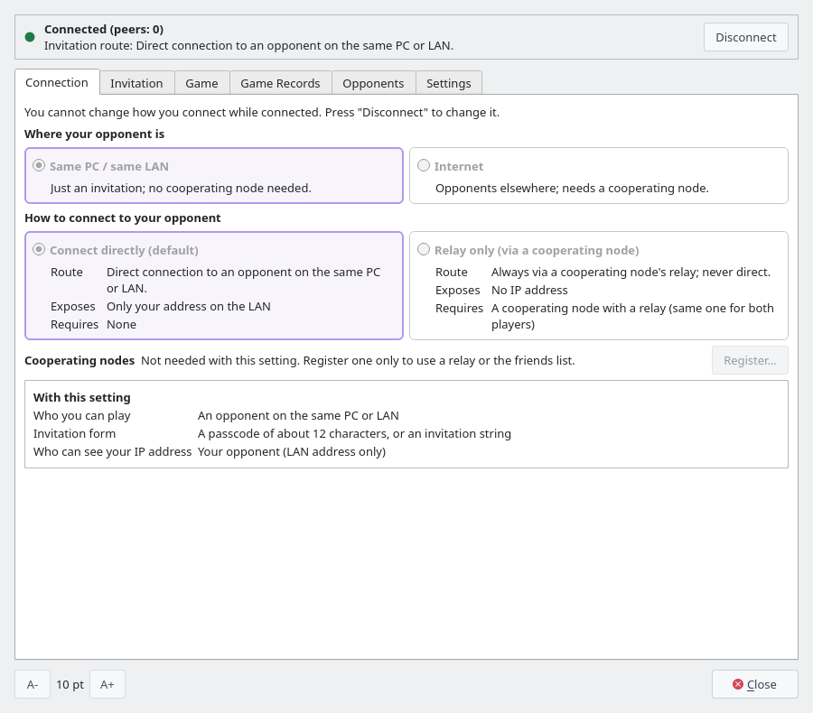
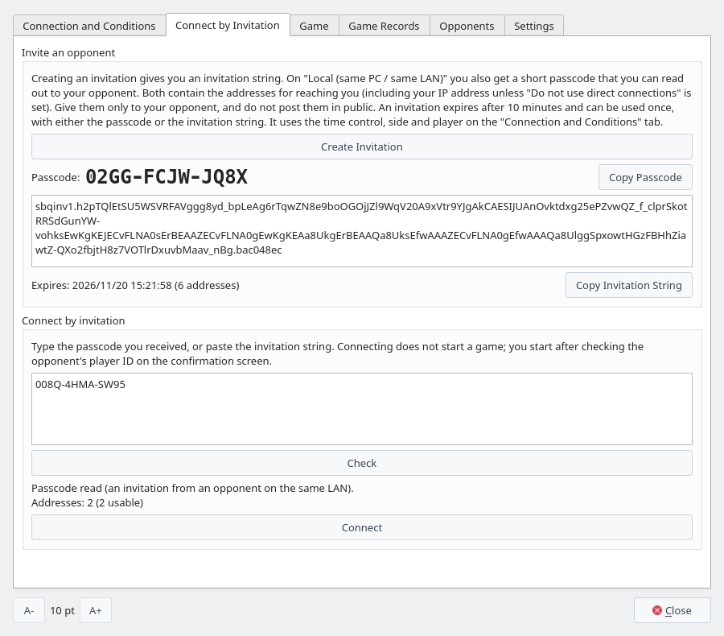

Playing Without a Cooperating Node
Play a P2P game with an opponent on the same PC or LAN, connected with just an invitation
Setting up P2P games (player key and display name), the window, and game records are covered in P2P Games. To play someone over the Internet, see Playing with a Cooperating Node.
Who You Can Play Without a Cooperating Node
On the Local (same PC / same LAN) network, you need neither a cooperating node nor any change on the Settings tab
When you connect with Network set to Local (same PC / same LAN), the invitation contains this PC's address on the LAN (such as 192.168.…) and an address used only within the same PC. The opponent's PC can reach these addresses directly, so no cooperating node is needed in between.
| Opponent | Can you connect? |
|---|---|
| Another copy of the app running on the same PC | Yes (Try It on One PC) |
| Another PC on the same LAN (the network behind the same router at home or at work) | Yes (Play Another PC on the Same LAN) |
| An opponent on the Internet (another home, a mobile connection, and so on) | No. See Playing with a Cooperating Node |
On this network, the app accepts connections only from addresses on the same PC or the LAN. Connections from the Internet are refused.
- Bootstrap nodes: You can leave it empty.
- Do not use direct connections: Leave it unchecked. When checked, the app stops using direct connections within the LAN as well, so you cannot connect (Invitation route shows "No relay is available. …").
- Address your opponent can see: Only your address on the LAN. Your IP address on the Internet is not given to the opponent. The invitation string contains all of this PC's LAN addresses (including those of VPNs and virtual devices), and the passcode contains LAN addresses too, so give them only to your opponent.
- Expiry: None. It keeps working more than 180 days after the build (only the Internet network expires).
Steps to Start a Game
Both players connect to Local, and one types the passcode the other created
Open the window with Game → P2P Game…. The first time, create a player key and enter a display name (Setup).
On the Connection and Conditions tab, set Network to Local (same PC / same LAN) and click Connect. You are ready when Status shows Connected (peers: 0) and Invitation route shows "Direct connection to an opponent on the same PC or LAN." (the peer count stays 0 until your opponent connects).


Connected to Local (same PC / same LAN)
The inviter first sets Time control, Byoyomi and Side on the Connection and Conditions tab. The game is played with these conditions.
Under Invite an opponent on the Connect by Invitation tab, click Create Invitation, and a passcode of about 12 characters (in the form K7MP-2QXD-9F3A) appears in large type. Tell this passcode only to your opponent: by voice if you are in the same room, or by phone or message if not (Copy Passcode copies it). An invitation stops working after 10 minutes, so tell it right after creating it.
The box below the passcode shows the invitation string (a long string) of the same invitation. When sending text is easier, or when the passcode does not connect, click Copy Invitation String and send it by a channel that reaches only your opponent, such as a private message. The passcode and the invitation string are one and the same invitation, so only one of them can be used, once. The expiry and the number of addresses appear below the box.
The invited player types the passcode into the Connect by invitation box on the Connect by Invitation tab (or pastes the invitation string, if that is what was sent) and clicks Check. A passcode can be typed in lowercase and without the “-” separators. When "Passcode read (an invitation from an opponent on the same LAN)." and the number of addresses appear (for an invitation string: the inviter's PeerId, the expiry and the number of addresses), click Connect.
The invited player does not need to set the time control or other conditions (the inviter's conditions are used). Just enter a Display name.


Top: the inviter has created an invitation (passcode and invitation string). Bottom: the invited player has checked a passcode
Once connected, Confirm P2P Game Conditions opens for both players. Check the opponent's display name and player ID, the sides and the time control, and click Start. The game begins when both players click Start within 60 seconds.
For what the screen shows, see Confirmation Screen; for in-game controls, see Playing; for the record kept after the game, see Game Records and Verification.
How Many People You Can Invite, and How Often
A game is one-on-one, one game at a time. Create one invitation for each opponent
- One person only: Only one person can connect with an invitation. Once your opponent connects, that invitation can no longer be used.
- The passcode and the invitation string are one invitation: They are two forms of the same invitation. Once your opponent connects with one of them, the other stops working too. They also share the 10-minute lifetime. Entering a passcode that has expired or has already been used shows "Connected to the opponent, but the passcode was not accepted. …".
- Expires in 10 minutes: Even if unused, an invitation stops working 10 minutes after it is created (the person who pastes it sees "The invitation has expired.").
- One-on-one games: There is no way for three or more people to play one game, and no way for others to watch.
- Another game: The connection is closed when a game ends. To play the same opponent again, create a new invitation and send it.
- Up to four at a time: You can create one invitation each for several people. Up to four can be valid at the same time; creating a fifth makes the oldest one stop working.
- One game per app at a time: You move on to confirming conditions with whoever connects first. During that time and during the game, no one else can connect (while conditions are being confirmed, the other person sees "The opponent is busy negotiating or playing with someone else."). Give anyone who could not connect a new invitation after the game. For eight people to play four games at once, one player in each pair invites the other (One-on-One Games, One Game per App at a Time).
- Still usable after a game: Invitations that are still within their 10 minutes and unused remain valid after a game ends.
- The latest conditions apply: Every valid invitation plays with the display name, time control, byoyomi, side and player (human or engine) that were set when you last clicked Create Invitation. To change the conditions, change them and create the invitation again.
- Cancel them all: Clicking Disconnect on the Connection and Conditions tab makes all valid invitations stop working.
Either of the two players can be the inviter. The time control and side are the inviter's conditions. The invited player does not need to create an invitation. You cannot use an invitation you created yourself ("This is your own invitation." appears).
If another PC on the same LAN cannot connect, swapping who creates the invitation may help. The inviter's PC is the one that waits for the connection, so its firewall is what matters (next section).
Play Another PC on the Same LAN
The inviter's PC waits for connections on TCP and UDP port 48210
The inviter's PC waits for the opponent's connection on TCP and UDP port 48210 (a second app on the same PC uses a free port instead). If the PC's firewall blocks connections to this port, the opponent sees "Could not connect to the opponent."
With firewalld, the following command allows it until the next reboot.
$ sudo firewall-cmd --add-port=48210/tcp --add-port=48210/udpWith ufw, sudo ufw allow 48210 allows it (remove it later with sudo ufw delete allow 48210). The app accepts connections only from addresses on the LAN, so even with the port open, connections from the Internet are refused.
On Windows, no firewall prompt appears when the app starts listening (the communication process runs inside a container, an AppContainer, that is allowed to talk to the same LAN). Games between two apps on the same PC have been verified. Whether connections from another PC get through depends on whether Windows treats the network as Private and on the Windows firewall settings (games with another PC have not been verified yet).
On macOS, too, games between two apps on the same computer have been verified. When you connect to another computer, macOS may ask you to allow incoming connections (if the macOS firewall is on) and, the first time the app talks to a computer on the LAN, to allow access to the local network (a game where the macOS computer invited and a Linux computer on the same LAN joined has been verified).
| Message or state | What to check |
|---|---|
| "The invitation is for another network." | The two players chose different networks. Both reconnect to Local (same PC / same LAN), and the inviter creates a new invitation. |
| "The invitation has expired." | Ten minutes have passed since it was created. Create a new invitation. |
| "Could not connect to the opponent." | Check the firewall on the inviter's PC (step 1 above). Swapping who creates the invitation may also help. |
| Invitation route shows "No relay is available. …" | Uncheck Do not use direct connections on the Settings tab, then disconnect and connect again. |
| "The opponent is busy negotiating or playing with someone else." | The opponent is confirming conditions or playing with someone else. Get a new invitation after they finish. |
| Guest Wi-Fi and similar networks | On a network that blocks traffic between connected devices, you cannot connect even on the same LAN. |
Try It on One PC
Start this app several times on the same PC to try a game on one computer
If you start this app several times on the same PC and open P2P Game in each, the second one opens automatically as Player 2, the third as Player 3, and so on (up to eight at a time). The window title and the note at the top show which player it is. When only one app is running, it is always Player 1.
The player key (player ID), display name, game records and opponent list are saved separately for each player. Connect both to Local (same PC / same LAN), then type the passcode created in one into the other (pasting the invitation string works too) to play without a cooperating node. Since the connection stays within the same PC, you usually do not need to change the firewall either.
Questions and Answers
Common questions about playing without a cooperating node, and their answers
No, you do not. On Local (same PC / same LAN), the invitation contains this PC's address on the LAN, and the opponent's PC can reach it directly. You cannot connect to an opponent on the Internet this way (Playing with a Cooperating Node).
For an opponent on the same LAN, the passcode is the easy way. It is about 12 characters, so you can tell it by voice or over the phone, and your opponent can type it by hand. The invitation string is the long form of the same invitation, for sending as text in a message. A passcode holds up to four of this PC's LAN addresses, so if the passcode does not connect, try the invitation string. Both are one and the same invitation, so only one of them can be used, once. Passcodes are available only on Local (same PC / same LAN); an invitation on Internet has only the invitation string.
The firewall on the inviter's PC may be blocking connections to TCP and UDP port 48210. Open the port, or swap who creates the invitation (Play Another PC on the Same LAN). On a network that blocks traffic between connected devices, such as guest Wi-Fi, you cannot connect even on the same LAN.
Because only the inviter's PC waits for a connection. The invited player's PC starts the connection itself, which a firewall normally does not block. So if you create the invitation on the PC that does not block incoming connections, you can connect. For example, a pair that could not connect when the Linux PC invited and the macOS PC joined was able to play when the macOS PC invited and the Linux PC joined (on Linux, firewalld or ufw often blocks incoming connections). To be able to invite from either PC, open the port on each of them (Open the Port in the Firewall).
Only one person can connect with an invitation, once, and it stops working 10 minutes after it is created. To play the same opponent again, create a new invitation. To invite several people, create one invitation for each (up to four can be valid at the same time). You can play only one game at a time (How Many People You Can Invite, and How Often).
It is the number of addresses the invitation contains (up to 8). On Local, the invitation contains this PC's addresses on the LAN (one each for UDP and TCP per network interface, including those of VPNs and virtual devices) and addresses used only within the same PC, so the number differs from PC to PC.
No. When checked, the app stops using direct connections within the LAN, so you cannot connect (Invitation route shows "No relay is available. …"). On Local, your opponent can see only your address on the LAN. This setting is for hiding your IP address from your opponent in games over the Internet (Play Without Showing Your IP Address).
Yes. Start this app twice on the same PC and open P2P Game in each; the second one opens automatically as Player 2. The player key, display name and game records are saved separately for each player (Try It on One PC).
The connection is closed, and valid invitations stop working. If you quit during a game, the game cannot be resumed and the result stays unconfirmed (When the Connection Drops). If you only close the P2P Game window, the connection and the game continue.